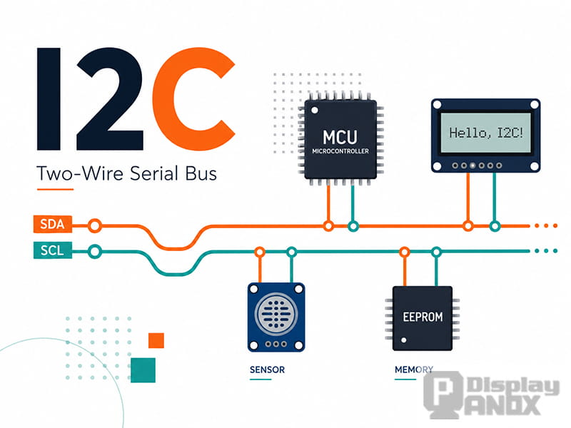
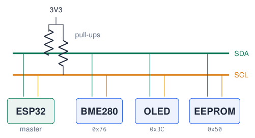
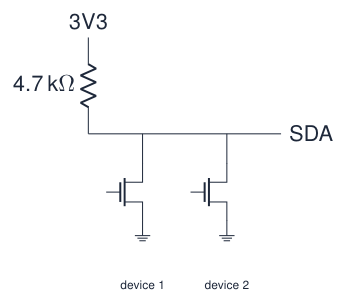
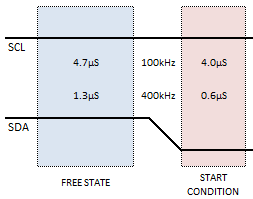
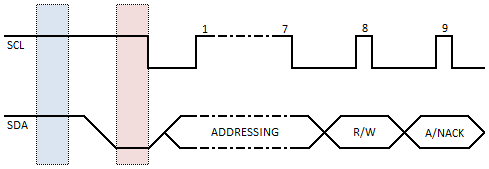
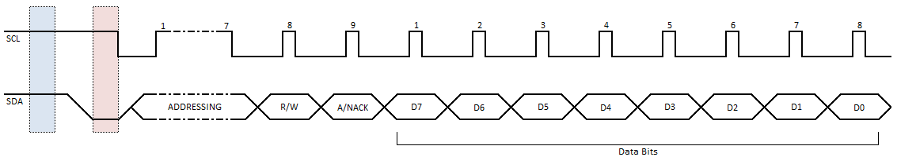
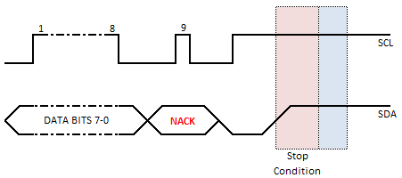
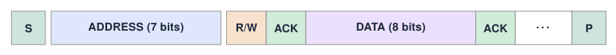
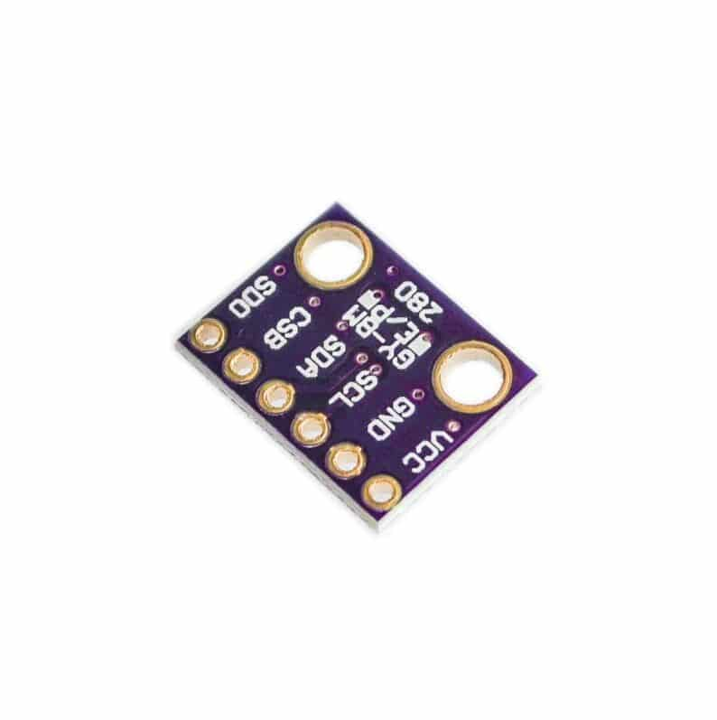

The I2C Bus¶
I2C at a glance¶

-
I2C: Inter-Integrated Circuit (Philips, 1982).
-
Serial communication with multiple devices on the same wires.
-
Only two signal wires (+ VCC and GND):
-
SDA: data
-
SCL: clock (timing)
-
One master (controller), several slaves (targets), each with an address.
-
Typical speeds: 100 kHz (standard), 400 kHz (fast).
Sources: Figure: panoxdisplay.com, via lecture 5 Embedded Programming, lectures 1–6; UM10204: I2C-bus specification and user manual, Rev. 7.0
Master and slaves¶
Master (e.g. the ESP32)
-
controls the communication;
-
generates the clock signal on SCL;
-
starts every transfer;
-
requests data from a slave.
Slave (sensor, display, memory)
-
only responds to master requests;
-
every I2C device has an address (7 bits);
-
other devices ignore requests not meant for them.

Example: the BME280 answers to 0x76. The ESP32 sends “0x76, give me register 0xF7”: only the BME280 reacts.
Sources: Embedded Programming, lectures 1–6
Pull-up resistors and open-drain lines¶

-
The pull-up resistors make the lines HIGH by default.
-
Devices can only pull the line LOW (“open drain”); they never drive it HIGH.
-
So two devices can never short-circuit each other, even if both talk at once.
-
Pull-ups are often already on the sensor board.
-
The internal ESP32 pull-ups (\(\approx\) 45 k\(\Omega\)) are too weak for reliable I2C: use 2.2–10 k\(\Omega\).
Sources: Embedded Programming, lectures 1–6; UM10204: I2C-bus specification and user manual, Rev. 7.0
A transaction, step by step (1/2)¶
1. Start condition

The master pulls SDA LOW while SCL is HIGH. All slaves start listening.
2. Address + read/write

The master sends the 7-bit address and 1 bit: R/W (0 = write, 1 = read). The addressed slave answers with ACK (pulls SDA LOW).
Rule
Data on SDA may only change while SCL is LOW. A change while SCL is HIGH is a START or STOP condition.
Sources: Figures: Rheingold Heavy I2C Signals, via lecture 5
A transaction, step by step (2/2)¶
3. Data bytes

8 bits per byte, most significant bit first; the receiver acknowledges every byte.
4. Stop condition

After the last byte the master releases SDA HIGH while SCL is HIGH: the bus is free. Or it sends a repeated start to continue.

Sources: Figures: Rheingold Heavy I2C Signals, via lecture 5
Worked example: the bytes on the wire¶
Read the chip ID of a BME280 at 0x76
-
START
-
Address byte, write: \((0x76 \ll 1) \,|\, 0\) =
0xEC\(\rightarrow\) ACK -
Register number
0xD0(chip ID) \(\rightarrow\) ACK -
Repeated START
-
Address byte, read: \((0x76 \ll 1) \,|\, 1\) =
0xED\(\rightarrow\) ACK -
Slave sends
0x60(BME280) \(\rightarrow\) master NACK -
STOP
Why 0xEC?
The 7-bit address 0x76 = 111 0110 is shifted one place left to make room for the R/W bit: 1110 1100 = 0xEC.
BME280 or BMP280?
Chip ID 0x60 = BME280 (with humidity), 0x58 = BMP280 (no humidity). The modules look identical!
Datasheets
Some datasheets give the 8-bit form (0xEC/0xED), libraries use the 7-bit form (0x76).
Sources: BME280 Combined humidity and pressure sensor, datasheet; UM10204: I2C-bus specification and user manual, Rev. 7.0
I2C: scanning the bus and reading a register¶
#include <Wire.h>
void setup() {
Serial.begin(115200);
Wire.begin(19, 18); // course board SDA, SCL
Wire.setClock(400000); // fast mode
for (uint8_t a = 1; a < 127; a++) {
Wire.beginTransmission(a);
if (Wire.endTransmission() == 0)
Serial.printf("Found 0x%02X\n", a);
}
}
void loop() {}
uint8_t readReg(uint8_t dev, uint8_t reg) {
Wire.beginTransmission(dev);
Wire.write(reg);
Wire.endTransmission(false); // repeated start
Wire.requestFrom(dev, (uint8_t) 1);
return Wire.read();
}
// MPU-6050: readReg(0x68, 0x75) == 0x68
-
2 wires shared by many devices, each with a 7-bit address.
-
Pull-ups (2.2–10 k\(\Omega\)) to 3.3 V; most breakout boards have them.
-
In practice: use the sensor’s library.
Sources: Espressif: GPIO Matrix and Pin Mux
The BME280 sensor: wiring¶

-
Measures temperature, humidity and pressure.
-
Check the schematic of your board for the SDA/SCL pins!
Sources: BME280 Combined humidity and pressure sensor, datasheet; Embedded Programming, lectures 1–6
The BME280 sensor: code¶
#include <Wire.h>
#include <Adafruit_BME280.h>
Adafruit_BME280 bme; // uses Wire by default
void setup() {
Serial.begin(115200);
Wire.begin(19, 18); // course board SDA, SCL
if (!bme.begin(0x76)) { // 0x77 if SDO is HIGH
Serial.println("BME280 not found: check wiring/address");
while (true) delay(10);
}
}
void loop() {
float t = bme.readTemperature(); // Celsius
float h = bme.readHumidity(); // %
float p = bme.readPressure() / 100.0F; // Pa -> hPa
Serial.printf("T=%.2f C RH=%.1f %% p=%.1f hPa\n", t, h, p);
delay(2000);
}
-
Library: Adafruit BME280 (+ Adafruit Unified Sensor).
-
bme.begin(0x76)uses theWirebus you started. -
Check the return value:
false= no answer at that address.
Test the connection first
Run the I2C scanner: it must list 0x76 before the library can work.
Sources: Adafruit BME280 Library; Embedded Programming, lectures 1–6
Troubleshooting I2C¶
Second bus
The ESP32 has two I2C controllers: TwoWire Wire1 = TwoWire(1); Wire1.begin(25, 26);
Quiz: I2C¶
-
Which two signal lines does I2C use, and what does each carry?
Check your answer
SDA (data) and SCL (clock).
-
How does a slave know a message is meant for it?
Check your answer
The master sends the 7-bit address first; only the device with that address answers (ACK).
-
Why do I2C lines need pull-up resistors?
Check your answer
Devices can only pull the lines LOW; the resistors provide the HIGH level.
-
What byte appears on the wire when the master wants to read from address
0x3C?Check your answer
\((0x3C \ll 1) | 1\) =
0x79. -
How many addresses does a 7-bit address field allow?
Check your answer
128 (some are reserved: about 112 usable).
Exercises: I2C¶
Exercise 1 – Bus inventory
Connect the BME280 and the OLED to the I2C header at the same time. Run the scanner and print a name for each known address.
Exercise 2 – Without library
Read the chip ID register (0xD0) with only the Wire functions. Decide: BME280 or BMP280?
Exercise 3 – Weather station
Show temperature, humidity and pressure on the OLED every 2 s; light the red LED if the humidity is above 70 %.